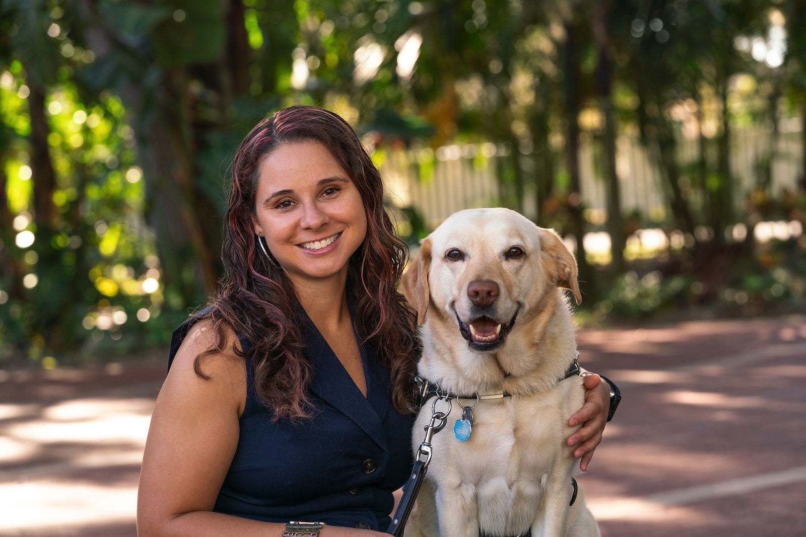

Katie McCoy

Summary
Experienced fundraising professional with 5 years of experience in major gifts. Known for building strong relationships and being an excellent public speaker. Motivated to gain experience as a web developer with a focus on accessibility.
Education
George Washington University
Washington, DC
Master's of Arts in Teaching, August 2014
College of Charleston
Charleston, SC
Bachelor's of Arts in History, May 2013
Work Experience
Associate Director, Philanthropy - Southeastern Guide Dogs - June 2018-Present
- Manage and grow a portfolio of donors through building relationships
- Participating in education programming, events, and public speaking
Style Team Member - Target - February 2023-October 2023
- Manage the fitting room by helping guests set up rooms, sorting return clothes, and bringing them back to the floor
- Helping guests, restocking the floor, and keeping clothing areas neat
Special Education Teacher - Colleton County Middle School - August 2016-June 2018
- Teaching students with learning disabilities in general and special education classes
- Creating IEPs
Education Assistant - Old Exchange and Provost Dungeon - May 2015-June 2016
- Facilitating Educational programming for people of all ages
- Creating content for the museum's social media platforms including videos and reading material
Substitute Teacher - School District of Oconee County - December 2014-May 2015
- Managing students in a classroom
- Facilitating Lessons
Intern - Taste of DC - September 2014-October 2014
- Marketing the Taste of DC festival
- Setting up and running of the food festival including organizing 200 volunteers, 50 vendors, and employees
Youth Volunteer Coordinator - National Museum of Natural History - June 2014-August 2014
- Managed 50 youth volunteers in the Q?rius exhibit including sceduling and performance reviews
- Created programming for the loft area for the visitors
- Helped organize learning opportunities for the volunteers inclduing 3D printing and artifact preservation
Research/Data Collector - Audience Focus - June 2014-August 2014
- Collected in depth interview for the Smithsonian Music Group
- Pilot tested evaluation instruments
Family Programs Intern - National Building Museum - January 2014-April 2014
- Updated family toolkits (activities for families to do at the museum)
- Prepared and facilitated activites for festivals that reached over 10,000 people
- Participated as a member of the Keystone (young professional) Membership Society planning team
Museum Specialist Intern - Goodwin House - August 2013-December 2013
- Design and facilitate museum trips and programs
- Perform object based and art lessons for individuals with Alzheimer's
Fairy Godmother in Training - Walt Disney World - August 2011-January 2012
- Made children into princesses by doing hair, makeup, and nails
- Helped guests plan their trips and told them about fun things to do on their visit
Skills
- Donor management
- Sales
- Microsoft suite
- HTML
- Teaching
- Public Speaking
Awards and Certifications
- Certificate in Major Gifts Management from Indiana University Lilly Scool of Philanthropy - 2019
- Certificate in Nonprofit Leadership from Indiana University Lilly School of Philanthropy - 2020
- Bright Idea Award from Southeastern Guide Dogs - 2023
Web Development Projects
HTML Portfolio
Other
Hobbies
Contact Me